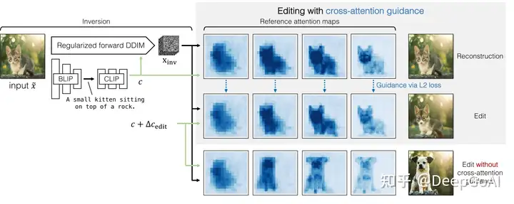
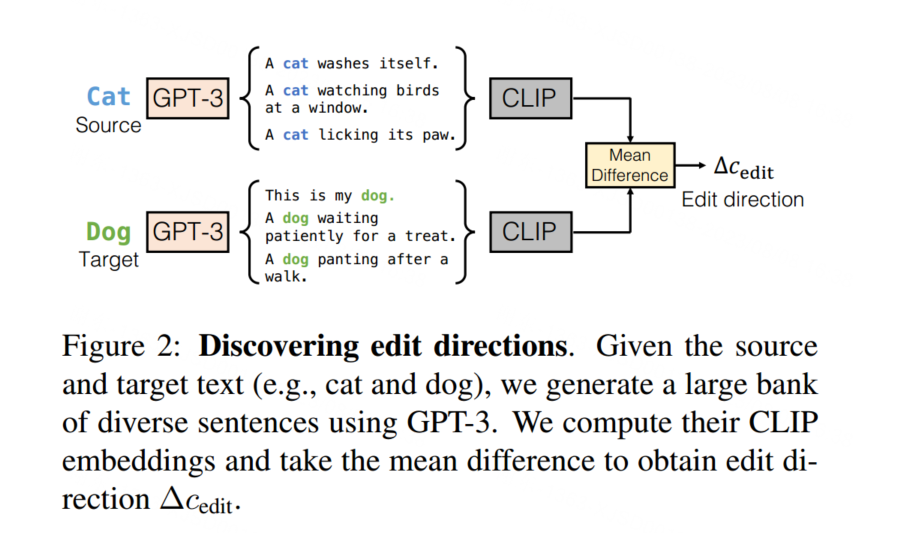

论文 #
-
开源地址
pix2pix-zero git -
Project page
Project page官网有个介绍视频 看过不错
Method[1] #

上图展示了pix2pix-zero方法的概述，这是一个将图片从猫变成狗的图像到图像的翻译例子。首先，使用规范化的DDIM反转来得到一个反转的噪声映射，这是由BLIP图像字幕（caption）网络和CLIP文本嵌入模型自动生成的文本嵌入引导的。然后，使用原始文本嵌入去噪以获得交叉注意力图，作为输入图像结构的参考（顶部行）。接下来，使用编辑后的文本嵌入去噪，通过损失函数确保这些交叉注意力图与参考交叉注意力图相匹配（第二行）。这确保了编辑图像的结构与原始图像相比不会发生剧烈变化。没有交叉注意力引导的去噪示例显示在第三行，导致结构上的大偏差。此可视化强调了在编辑过程中保持图像原始结构的交叉注意力的重要性。
Discovering edit directions [2] #

参考 #
实战